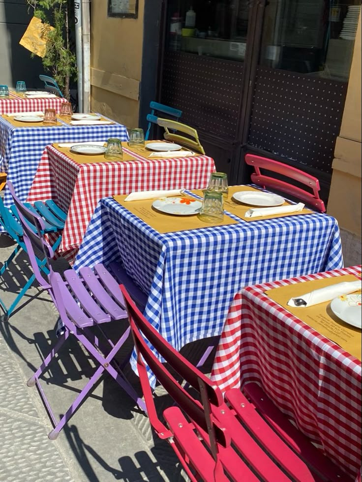
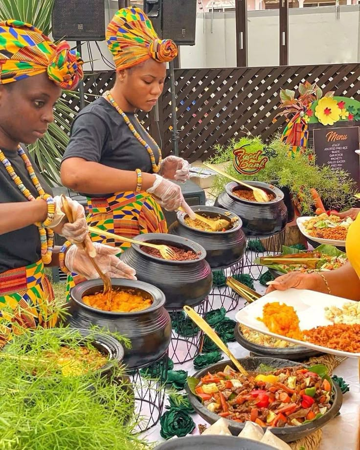
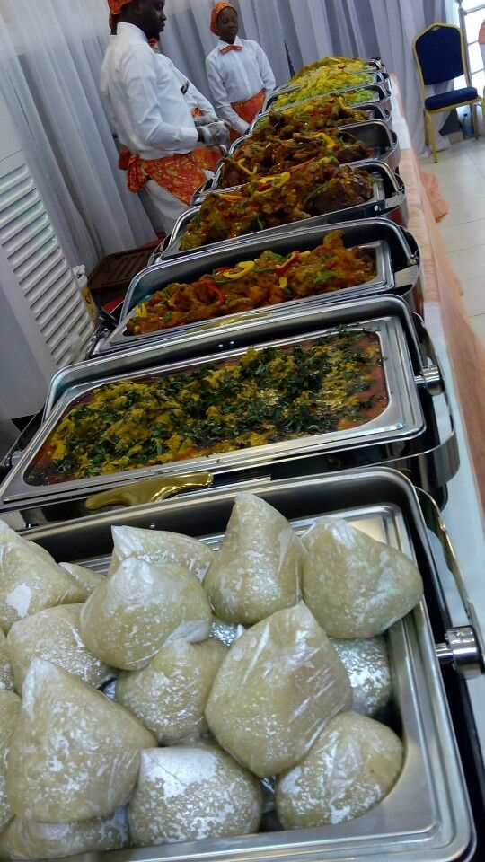

À Propos de Nous
Le Restaurant Le Saveur du Tchad est un lieu incontournable pour découvrir les délices de la cuisine locale et africaine. Nous mettons un point d'honneur à utiliser des ingrédients frais et locaux pour vous offrir des plats savoureux et authentiques. Notre ambiance chaleureuse et notre personnel accueillant vous garantissent une expérience culinaire mémorable.
Venez déguster nos spécialités comme le poulet yassa, le poisson braisé, le djarat ou le kissar. Nous proposons également des options végétariennes et des boissons rafraîchissantes.
Horaires d'Ouverture
- **Lundi - Vendredi :** 08h00 - 22h00
- **Samedi :** 09h00 - 23h00
- **Dimanche :** Fermé
Galerie Photos



Avis des Clients
"Un excellent restaurant avec des plats délicieux et un service impeccable. Le poulet yassa est un régal !"
"Ambiance agréable et plats copieux. Bon rapport qualité-prix."